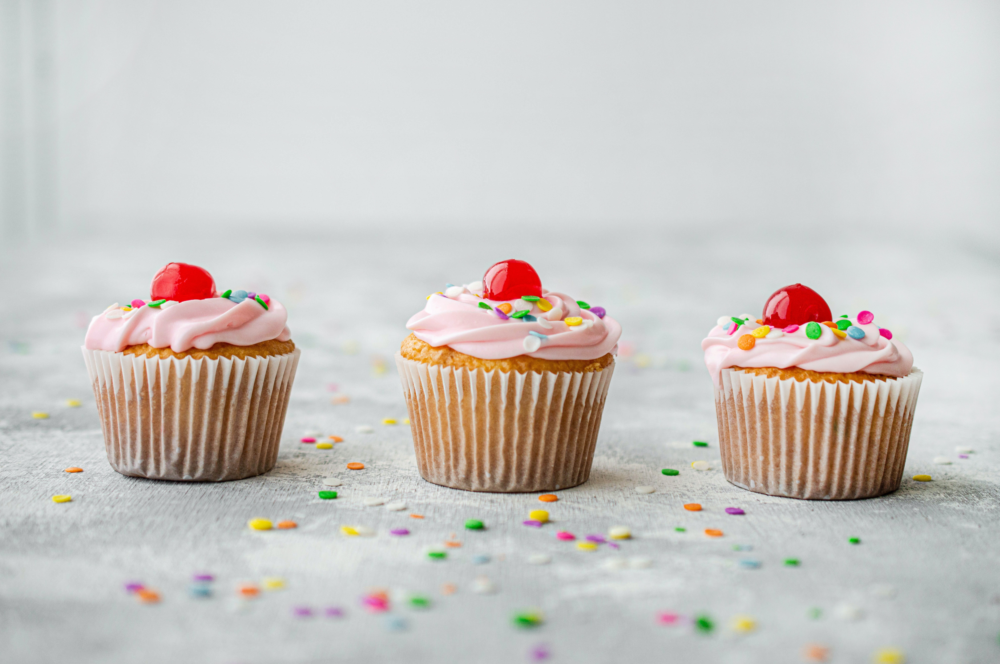
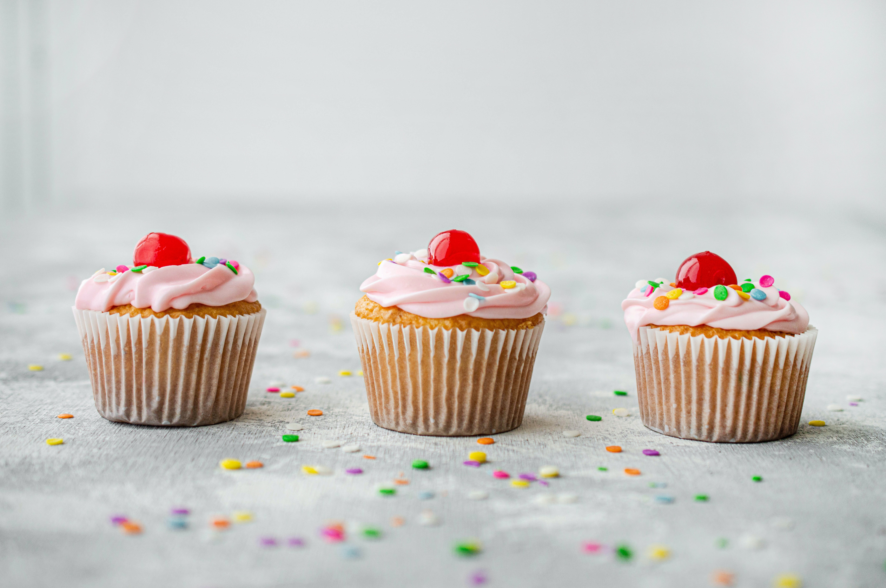

Un cupcake, también conocido como patty cake o fairy cake, es una pequeña tarta individual que se cocina frecuentemente en moldes similares a los empleados para hacer muffins o magdalenas. Antes de que existieran estos moldes, se solían hacer en tazones, ramequines o cazuelas de barro, dándole significado a su nombre en inglés. La receta clásica de cualquier cupcake es similar a la de una tarta: mantequilla, harina, levadura, huevos y azúcar; y debido a su reducido tamaño, cuenta con una cocción mucho más rápida que la de una tarta común. Al ser servido como un postre, es común encontrarlas en celebraciones de fiestas infantiles y cumpleaños. La decoración habitual para estas ocasiones es una crema de mantequilla a la que se le añade color y sabor para lograr que el cupcake sea aún más vistoso y apetecible.